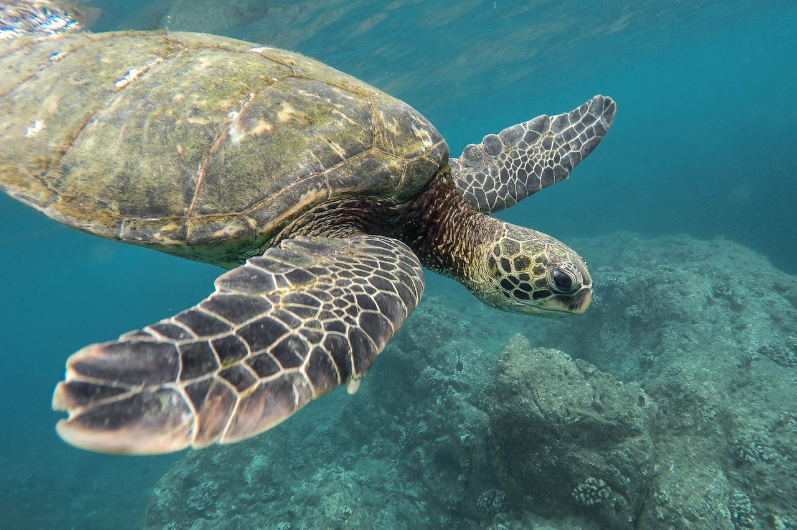
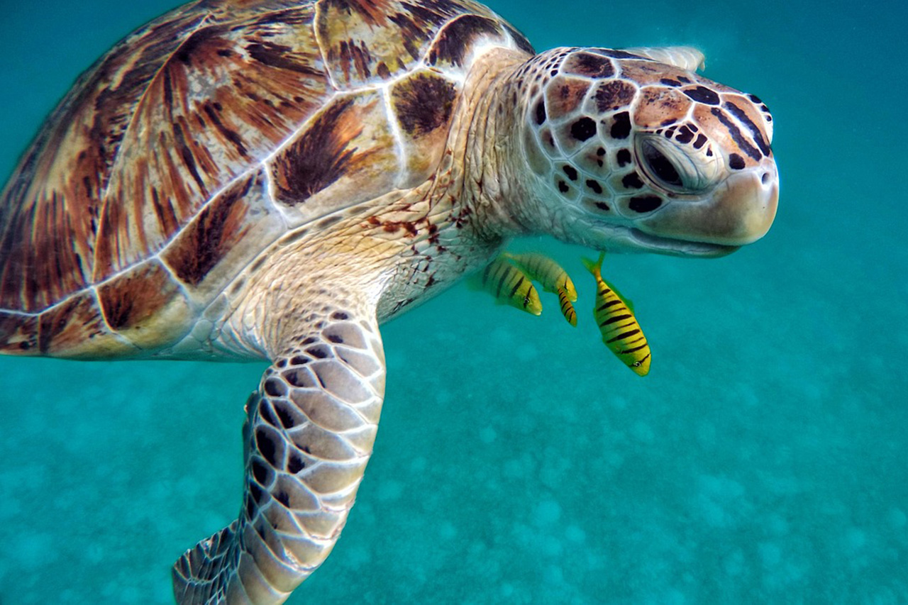

거북이 설명
(사진 위 마우스 호버)


파충류에 속하는 동물로, 그중 바다거북은 수중 생활에 특화되어 있는 바다거북상과로 분류된다.
팔과 다리는 전부 지느러미 형태로 되어있어 수중에서 지느러미로 헤엄친다, 등껍질 안에 집어 넣을 수 없다.
바다 거북은 주로 해조류를 뜯어먹곤 하지만 물고기나 해파리같은 동물성 먹이도 먹는다.
바다에서 나오는 순간은 알을 낳을 때 이며, 그때를 제외하곤 육지로 올라오지 않는다고 한다.
물에서 일생을 산다는 의미로 완전 수생거북이라고도 불리는데, 바다와 민물로 나눠진다.
참고로 모든 바다거북의 개인 사육은 불법이다.(동물원과 같은 곳은 불법이 아니고, 개인 사육이 불법이다.)